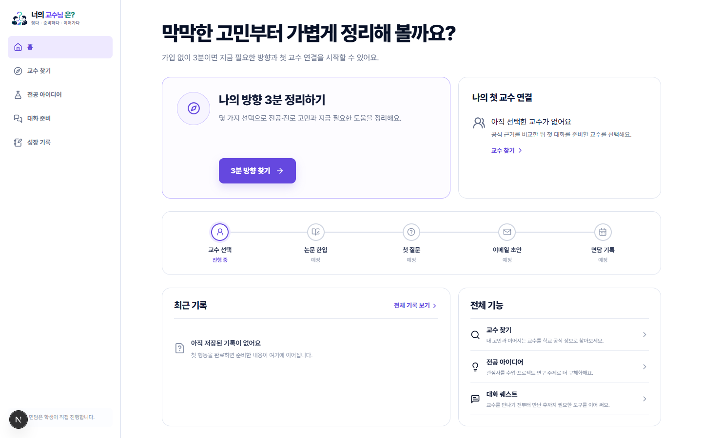
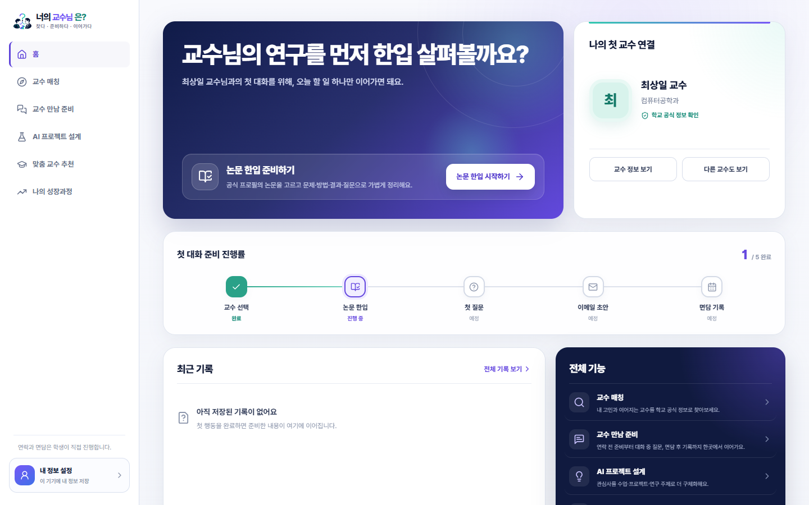
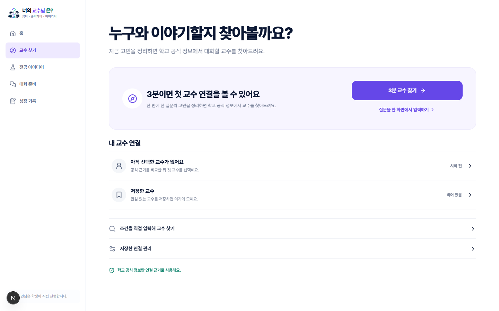
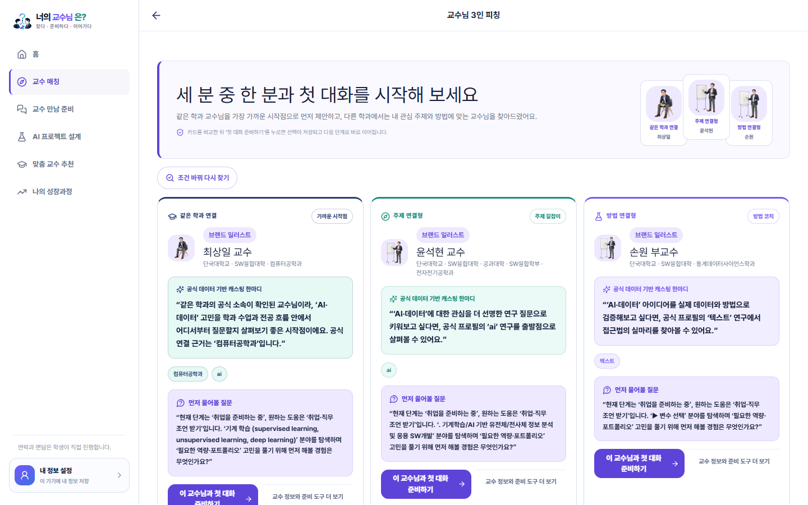
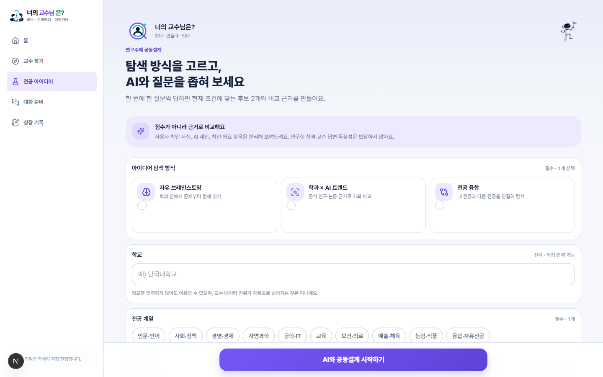
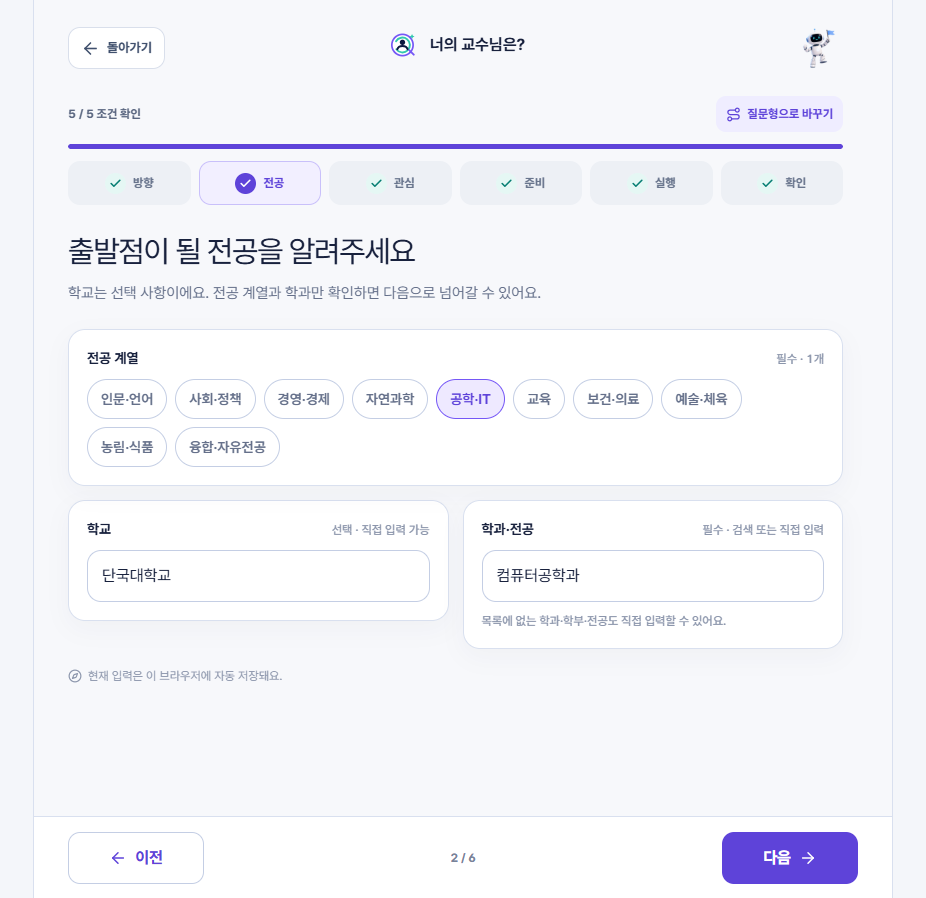
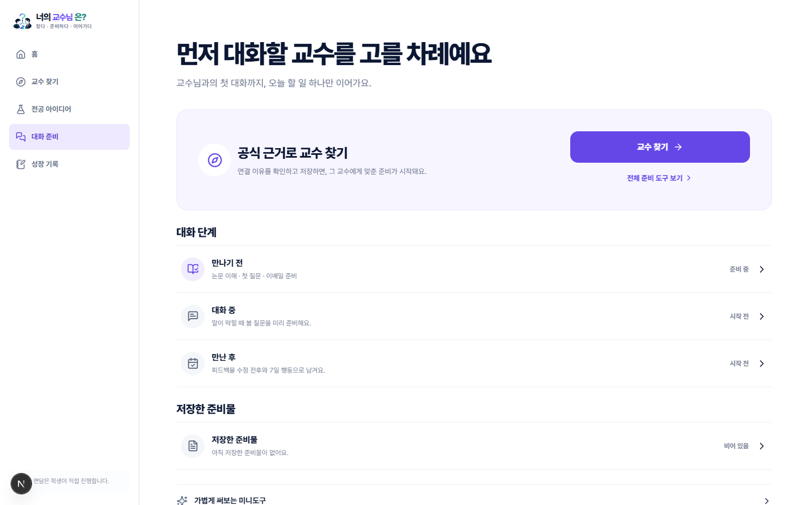
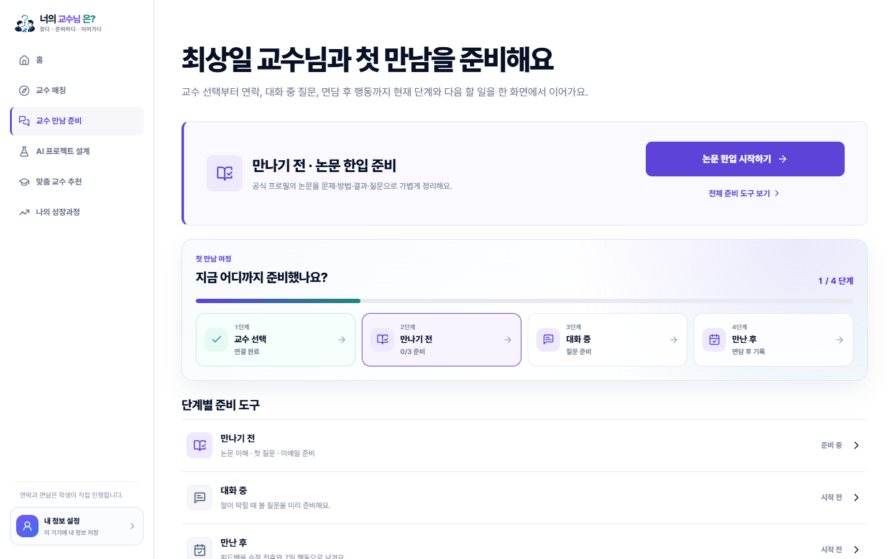
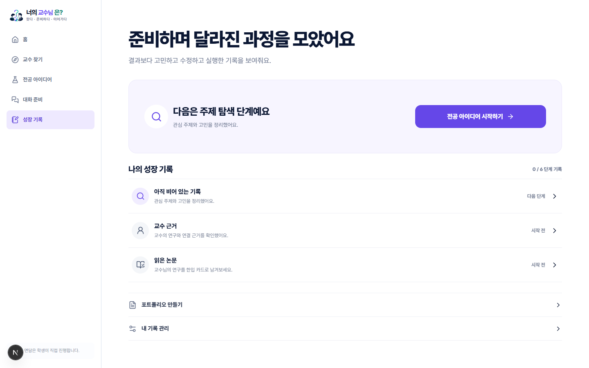
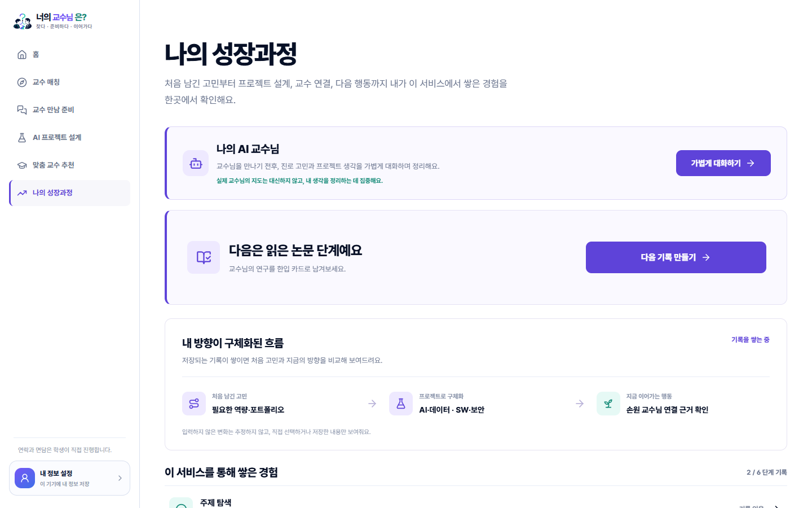

BEFORE정보는 많지만 첫 행동이 흐림

여러 카드와 기능을 한꺼번에 보여줘 사용자가 다음 버튼을 다시 찾아야 했습니다.
01 · HOME
사용자가 모든 기능을 훑지 않아도 현재 단계와 다음 행동을 먼저 확인하도록 바꿨습니다.

여러 카드와 기능을 한꺼번에 보여줘 사용자가 다음 버튼을 다시 찾아야 했습니다.

교수 연결 상태와 준비 진도를 바탕으로 오늘 이어갈 행동을 가장 먼저 제안합니다.
02 · PROFESSOR MATCHING
가까운 시작점, 주제 연결, 방법 연결이라는 서로 다른 역할로 비교 기준을 만들었습니다.

교수 찾기·저장·조건 입력이 나열되어, 누구를 왜 먼저 만나야 하는지는 약했습니다.

순위 대신 각 후보의 연결 이유와 첫 질문을 보여주고, 주 행동을 첫 대화 준비로 통일했습니다.
03 · PROJECT DESIGN
정보를 없앤 것이 아니라, 사용자가 판단해야 하는 순서에 맞게 나눴습니다.

탐색 방식부터 학교·전공·관심·기간까지 한 페이지에 이어져 시작 부담이 컸습니다.

방향·전공·관심·준비·실행·확인으로 분리하고 이전·다음 위치와 자동 저장을 일관되게 유지했습니다.
04 · MEETING PREP
교수 선택 이후의 막막함을 ‘만나기 전 → 대화 중 → 만난 후’의 다음 행동으로 바꿨습니다.

논문·첫 질문·이메일·기록 기능을 훑어야 해서 무엇부터 해야 할지 판단해야 했습니다.

현재 준비 단계, 완료 조건, 바로 실행할 도구를 한 화면에 연결했습니다.
05 · GROWTH JOURNEY
관심, 프로젝트, 교수 연결, 다음 행동을 시간의 흐름으로 다시 볼 수 있게 했습니다.

해야 할 단계는 보였지만, 사용자의 관심과 선택이 어떻게 달라졌는지는 확인하기 어려웠습니다.

저장한 고민과 프로젝트, 교수 연결 근거를 이어 보여주고 AI 사고 파트너도 같은 흐름에 배치했습니다.